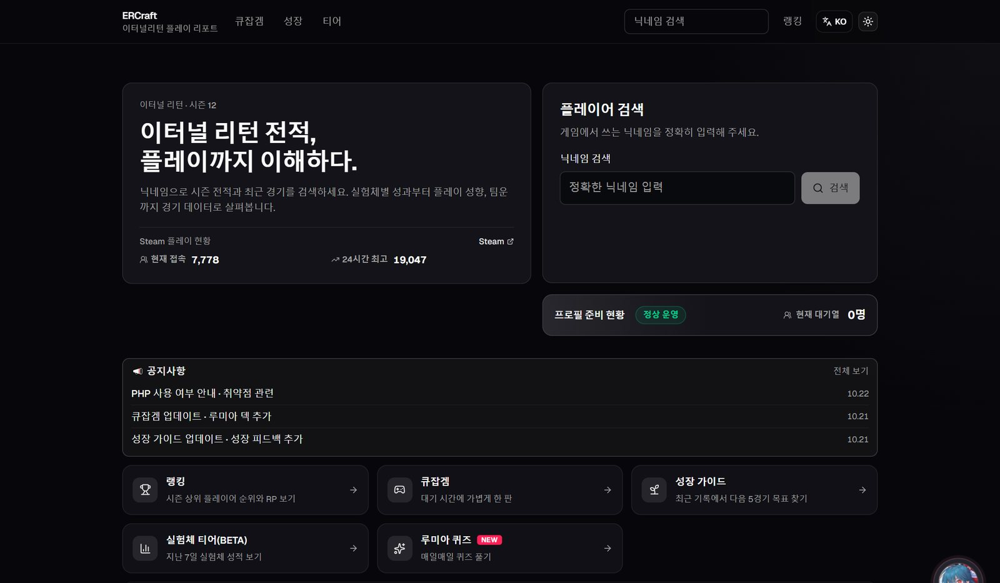
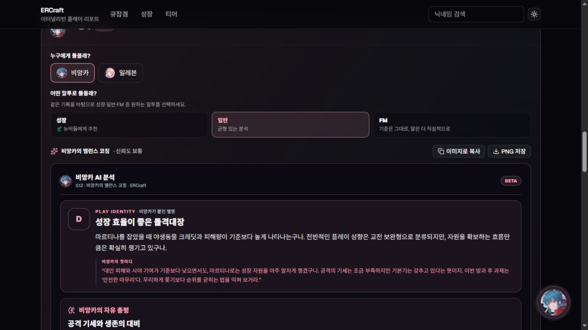

이터널 리턴 전적 사이트 ERCraft를 혼자 만들어 2026년 7월부터 운영하고 있습니다. 닉네임을 검색하면 공식 API에서 경기 기록을 받아 전적과 분석을 보여 주는 서비스입니다. 기획부터 화면, 서버, DB, 배포, 문의 대응까지 직접 맡고 있습니다.
하루 평균 1,466명사용자 · GA4, 2026.10.20–30 중 점검일(10.29)을 뺀 10일
52만 건검색 요청 32만 건 + 전적 갱신 요청 20만 건 · 서버 기록, 2026.8.2–10.31
경기 315만 건MySQL에 저장한 경기 기록
테스트 160개공개 라이브러리 · TypeScript 79개 + Python 81개 · npm·PyPI 공개

ERCraft 사례
사례 코드는 비공개 저장소인 ERCraft에서 일부만 가져왔습니다. 공개 코드는 아래 라이브러리에서 볼 수 있습니다.
5.3초→1.75초
첫 검색 대기 시간 · 저장된 기록이 6주 전인 플레이어 1명 실측 · 확인 단계는 따로 재서 4.08초 → 0.21초
첫 검색 대기 시간을 줄였습니다
2026.10 · TypeScript, Node.js, Fastify, 공식 게임 API
운영자용 진단 화면에서 단계별 시간을 보니, 플레이어 확인 단계 하나에서 4초가 걸리고 있었습니다. 저장된 기록이 이 플레이어의 것인지 확인하려고 공식 경기 목록에서 최근 경기 3개를 찾는 단계입니다.
기존 코드는 이 목록을 매번 첫 페이지부터 차례로 조회하고 있었습니다. 최근 확인 결과를 재사용하는 방법도 있었지만, 그러면 기록 주인을 확인하는 규칙이 바뀌어 쓰지 않았습니다. 규칙은 그대로 두고 찾기 시작하는 위치만 앞당겼습니다.
공식 API가 다음 페이지 위치를 경기 번호로 준다는 걸 실제 응답으로 확인하고, 저장된 최신 경기 다음부터 조회하게 바꿨습니다. 못 찾으면 처음부터 다시 조회합니다.
// Games newer than every anchor cannot prove anything, so start just above the newest
// anchor when the client's cursor is an official gameId. A miss rescans from the top.
const startCursor = (() => {
if (bser.userGamesCursorIsGameId !== true) return undefined
let largest = -1
for (const gameId of anchorGameIds) {
if (!/^[0-9]+$/.test(gameId)) return undefined
const numeric = Number(gameId)
if (!Number.isSafeInteger(numeric)) return undefined
largest = Math.max(largest, numeric)
}
if (largest < 0) return undefined
const cursor = largest + 1
return Number.isSafeInteger(cursor) ? cursor : undefined
})()
3명→24명
문의한 경기 1건에 저장된 플레이어 수
"팀원 기록이 없다"는 문의에서 미완성으로 저장된 경기 기록을 찾아 고쳤습니다
2026.10 · 사용자 문의 대응 · TypeScript, Prisma, MySQL, 공식 게임 API
팀원 기록에 "공식 기록 없음"이 뜬다는 문의를 받았습니다. 확인해 보니 24명이 있어야 할 경기 기록에 3명만 남아 있었습니다.
경기가 끝나기 전에 받아 둔 미완성 기록이 완성본으로 저장된 게 원인이었습니다. 끝난 경기도 24명보다 적을 수 있어서, 완성 여부는 참가자 수가 아니라 1등 기록이 있는지로 판단합니다. 다시 받을 대상은 플레이한 지 24시간이 지나지 않은 경기로 좁혔습니다.
첫 수정 뒤에도 문제가 남았습니다. 전적 갱신이 저장된 최신 경기에서 멈춰서, 그보다 오래된 미완성 경기를 다시 보지 못했습니다. 40분 뒤, 이미 받은 페이지에 있는 저장된 경기도 확인하게 고쳤습니다. 기록을 고치기만 한 갱신이 "변경 없음"으로 끝나 팀운 화면이 그대로이던 문제도 함께 고쳤습니다.
if (stoppedReason === 'existing-game') {
// A refresh stops at the first stored game. Later stored games on this
// already-fetched page are revisited only when their detail was fetched
// before the game ended (recent and winnerless).
const repairUid = ownerGameState.incompleteRecentGameIds.has(match.matchId)
? repairSources.get(match.matchId)
: undefined
배포 후 문의한 사용자의 경기 6개가 복구된 것을 확인했습니다. 7일이 지나 원본을 다시 받을 수 없는 경기는 "기록 부족"으로 따로 표시합니다.
LLM이 쓴 분석 문장의 숫자를 원본 데이터와 대조합니다
2026.9 · TypeScript, LLM API
LLM은 승률이나 순위가 틀려도 자연스러운 문장을 씁니다. 그래서 글을 항목별 JSON으로 쓰게 하고, 항목마다 근거로 쓴 데이터 키를 붙이게 했습니다. 검사기는 문장 속 숫자가 근거 값과 정확히 같은지 확인하고, 반올림이나 "약 몇 %"도 틀린 것으로 봅니다.
처음에는 한 곳만 틀려도 글 전체를 다시 쓰게 해서, 맞던 항목까지 바뀌었습니다. 틀린 항목만 다시 쓰게 바꿨습니다. 이때 근거 키를 바꾸면 그 결과를 버립니다. 근거까지 바꿀 수 있으면, 검사를 통과하려고 근거를 바꿀 수 있기 때문입니다. 고친 결과는 처음부터 다시 검사하고, 통과하지 못하면 내보내지 않습니다.
// Semantic repair changes prose, never the evidence boundary of a card.
if (record(original) && record(patch.value)
&& JSON.stringify(original.factRefs) !== JSON.stringify(patch.value.factRefs)) return null
서비스 구조
주요 흐름만 그렸습니다. Windows 서버 한 대에서 운영하며, 화면은 Cloudflare Pages로 제공하고 데이터 요청은 Tunnel을 거쳐 서버로 보냅니다.
확인할 수 있는 코드
ERCraft 코드는 비공개지만, 공식 API 연동 부분을 떼어 공개한 라이브러리에서 코드를 볼 수 있습니다.
eternal-return-apiTypeScript·Python · npm·PyPI 공개 · 테스트 TypeScript 79개(Node 18~24)·Python 81개(3.10~3.14) 자동 실행 · 요청 속도 제한, 429 재시도, 응답 캐시, 새 경기만 받기, 경기 감시, AI 도구용 MCP 서버 · 실제 경기 30판으로 확인한 가이드
한 경기의 참가자를 팀으로 묶는 함수입니다. 처음에는 팀 순위와 팀 킬을 첫 번째 팀원 기록에서 가져왔습니다.
실제 경기 기록을 확인하다, 게임을 포기한 플레이어 행에는 나간 시점의 값(5위, 팀 킬 14)이 남고 팀원 행에는 3위, 18이 남은 경기를 찾았습니다. 포기한 사람이 첫 번째로 오면 팀 순위가 틀리게 나옵니다. 그래서 포기하지 않은 팀원 중 가장 오래 남은 사람을 기준으로 바꿨습니다.
// A player who gave up keeps their rank and team kills from when they left,
// so team values come from someone who stayed: not given up, longest duration.
function stayScore(p: UserGame): [number, number] {
const duration = typeof p.duration === 'number' && Number.isFinite(p.duration) ? p.duration : -1
return [p.giveUp === 1 ? 0 : 1, duration]
}
function lastToLeave(members: UserGame[]): UserGame {
let best = members[0]!
let bestScore = stayScore(best)
for (const p of members) {
const score = stayScore(p)
if (score[0] > bestScore[0] || (score[0] === bestScore[0] && score[1] > bestScore[1])) {
best = p
bestScore = score
}
}
return best
}
처음 고친 버전은 남은 시간만 비교했습니다. 다른 모델에게 검토를 맡겼더니 "시간이 같거나 값이 비어 있으면 입력 순서에 따라 결과가 달라진다"는 지적이 나왔습니다. 그래서 포기 여부를 먼저 보고, 시간 값이 없으면 맨 뒤로 보내도록 고쳤습니다. 포기 여부나 남은 시간이 다른 팀원은 입력 순서가 바뀌어도 같은 사람을 고르는지 확인하는 테스트를 추가했습니다.
ERCraft를 운영하며 한 일
1분마다 22.7만 행을 처음부터 읽던 조회테이블 조회에 인덱스를 서비스 중에 추가하고, 쓰이지 않던 인덱스는 지웠습니다.
개발사에 문의해 리플레이 파일 사용 허락개발사에 문의해 리플레이 파일을 분석에 써도 된다는 답을 받았습니다. 조건에 맞춰 원본 파일은 분석 후 지우고, 삭제 요청 수단과 비공식 사이트 표시를 두었습니다.
전적 노출 차단 요청에 다음 날 대응10월 26일 "내 전적을 지워 달라"는 요청을 받고, 다음 날 검색, 프로필, API, AI 분석에서 그 계정이 보이지 않게 막는 기능을 배포했습니다. API 4개 경로와 화면에서 직접 확인했습니다.
배포 당일 500 오류 약 3,500건시즌 통계 API에서 난 오류였습니다. 서버 로그에서 함수 인자 순서가 바뀐 걸 찾아 같은 날 고쳐 다시 배포했습니다.
가장 큰 테이블 38.95GB → 16.3GB서비스를 내리지 않고 압축했습니다. 압축 전후 같은 표본 2,000행의 해시를 비교해 내용이 같은지 확인했습니다.
2026.10 그 밖의 작업팀 단위 킬 기록 78만 경기를 모아 교전 기여 지표를 다시 계산했고, 리플레이 분석을 12.6 패치에 맞췄습니다. 성장 피드백 기능을 배포했고, 영어·일본어·중국어 번역은 아직 배포 전입니다.

AI 분석 화면
React 19 · TypeScript · Vite · Node.js(Fastify) · Prisma · MySQL 8 · Python · Cloudflare Pages/Tunnel · Windows 서버 Cloudflare 요청 2,455만 건(캐시 포함, 2026.9.27–10.27) · 저장한 경기 315만 건(경기마다 참가자 전원 기록)
AI 프로젝트
AI가 게임을 끝까지 플레이하는 테스트 도구
루미아 덱(덱빌딩 게임) · 2026.10 · TypeScript, Phaser, LLM API
덱빌딩 게임의 밸런스를 고칠 때마다 사람이 여러 판을 해 볼 수는 없었습니다. 목표는 "처음 하는 사람은 1막 후반, 해 본 사람은 3막에서 막힌다"였습니다.
AI 모델이 실제 게임 엔진에서 한 판을 끝까지 플레이하게 했습니다. 매 턴 상황을 넘기면 모델이 낼 카드와 대상을 JSON으로 답하고, 규칙에 어긋난 행동은 막고 횟수만 기록합니다. 여러 판을 동시에 돌리고 끝난 판은 바로 저장해, 중간에 끊겨도 남은 판만 다시 돌립니다. 10월 19일 하루에 모델 3개로 21차례 돌렸습니다.
AI 점수를 올리려고 난이도를 낮췄다가, 직접 해 본 첫 판에 3막까지 쉽게 깼습니다. 너무 쉬워졌다고 보고 낮춘 부분 일부를 되돌렸습니다.
카톡 '나와의 채팅'으로 집 PC의 Claude Code, Codex, Gemini에 일을 시키고 결과를 받습니다. 내 계정이 보낸 '/' 명령만 받고, 기본은 읽기 모드이며, 파일은 실행 담당 AI만 고칩니다.
AI로 쓴 코드를 확인하는 방법
바뀐 범위부터 확인AI는 요청하지 않은 코드까지 바꾸는 경우가 많아, diff에서 범위 밖 변경을 먼저 봅니다. 중요한 변경은 코드를 쓴 모델과 다른 모델에게 한 번 더 검토를 맡깁니다.
배포 전 테스트배포 전에 테스트 전체를 돌려 기존 실패 목록과 비교하고, 새로 깨진 테스트가 없을 때만 배포합니다. Git 훅이 테스트 기록이 없거나 30분이 지났으면 배포를 막습니다.
다른 모델의 검토로 찾은 버그라이브러리에 새 경기 감시 기능을 넣을 때 코드를 쓴 모델과 다른 모델 두 개에게 검토를 맡겼습니다. 끊어서 받을 때 "여기까지 받았다"는 표시가 남은 경기를 받기 전에 앞으로 가서 경기를 놓칠 수 있는 문제, 리다이렉트를 따라가면 API 키가 다른 서버로 갈 수 있는 문제가 나와 고쳤습니다. 이후 실제 API로 12명을 15분 동안 감시해, 요청 377번으로 경기 종료를 잡는 걸 확인했습니다.
받지 않은 제안다국어 AI 분석을 처음부터 외국어로 만들자는 제안이 있었습니다. 그러면 한국어 기준으로 만든 숫자·근거 검사를 건너뛰게 됩니다. 그래서 한국어로 먼저 만들어 검사를 통과시킨 뒤 번역하게 했습니다.
다른 작업
리썰 컴퍼니 모드 14개C# · 2026.03–06 · 합계 다운로드 96,734 · Thunderstore
Unity 게임 리썰 컴퍼니용 한국어 번역 패치, 기존 모드를 고친 버전, 직접 만든 모드를 올렸습니다.
좀보이드 스토리 자동 진행 애드온Lua · Steam 창작마당 구독 641 · GitHub